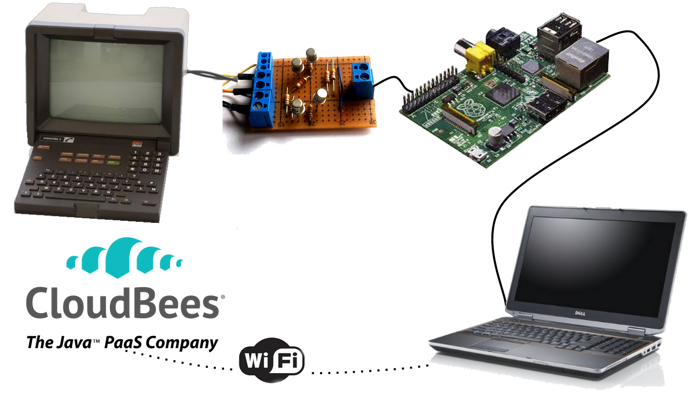

Pourquoi un minitel ?
- Pourquoi avoir un PC surpuissant ...
- ... quand tout est dans le cloud ?
- Les outils légers peuvent être productif
- La ligne de commande est ton ami
Pour quoi faire ?
- Développer avec des outils classiques
- Pour le fun
- Avec un clavier au touché inégalable
- Un jeu de piste pour retrouver certains caractères (| _ ' ...)
- Pour utiliser ma seconde Raspberry Pi !
Démo
Comment ça marche ?
Architecture

Merci de votre attention
Questions ?